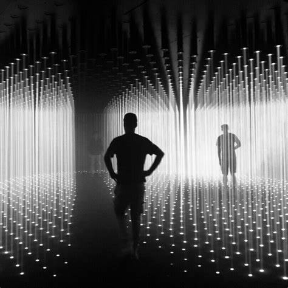

Random International
Vanaf 27 september kun je het werk van de postdigitale kunstgroep Random International bekijken in Nxt Museum.
De tentoonstelling toont nieuw voltooide werken en andere die nog nooit eerder in Europa zijn vertoond en volgt het creatieve proces van de kunstenaars, van 2006 tot vandaag.
De tentoonstelling is samengesteld door Bogomir Doringer en belicht het vakmanschap binnen en de contextuele achtergronden van een overzicht van hun werk.
“Voor wat onze derde tentoonstelling zal zijn, hebben we besloten diep in het oeuvre en de denkwijze van één kunstgroep te duiken.
De kunstwerken
De kunstwerken van Random International zijn creatieve, collectieve dansen tussen het publiek en technologie,
ze creëren verhalen in onze gedachten over wat het betekent om mens te zijn en samen te leven.”Bogomir Doringer, Curator
Bereid je voor om betoverd te worden door zes grootschalige werken, waaronder hun betoverende Living Room-installatie in samenwerking met Aorist, na het succes tijdens Miami Art Week in december 2022.
Over de kunstenaars
Opgericht in 2005 is Random International een postdigitale kunstgroep die de impact van technologische ontwikkeling op de menselijke conditie onderzoekt.
Het meest bekend om hun grootschalige interactieve installaties, werkt de groep in een scala aan media, waaronder beeldhouwkunst, licht, kinetica, video, drukwerk en geluid.
Geleid door de oprichters Hannes Koch (geb. 1975, Duitsland) en Florian Ortkrass (geb. 1975, Duitsland),
heeft de groep een studio in Londen en bestaat uit een wereldwijd team van complementair talent.